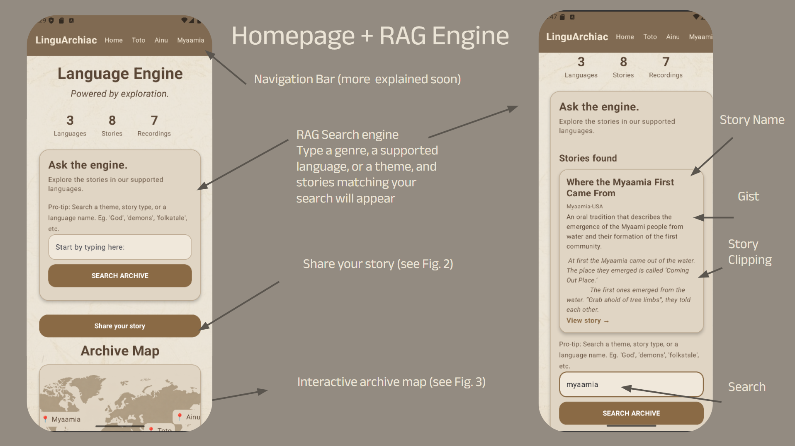

RAG SEARCH ENGINE
Ask Away Archive

Understanding: User types in a theme, a specific language, or type of story they want to see. This feature enacts the search engine, and presents you stories that match your search. The story name, country, language, gist, and first fifty words of the story are displayed onto the screen.
How I Implemented RAG: RAG allows for the search engine to function. It retrieves stories matching your search, and displays results, or says "None found." if none of the stories align with your search.